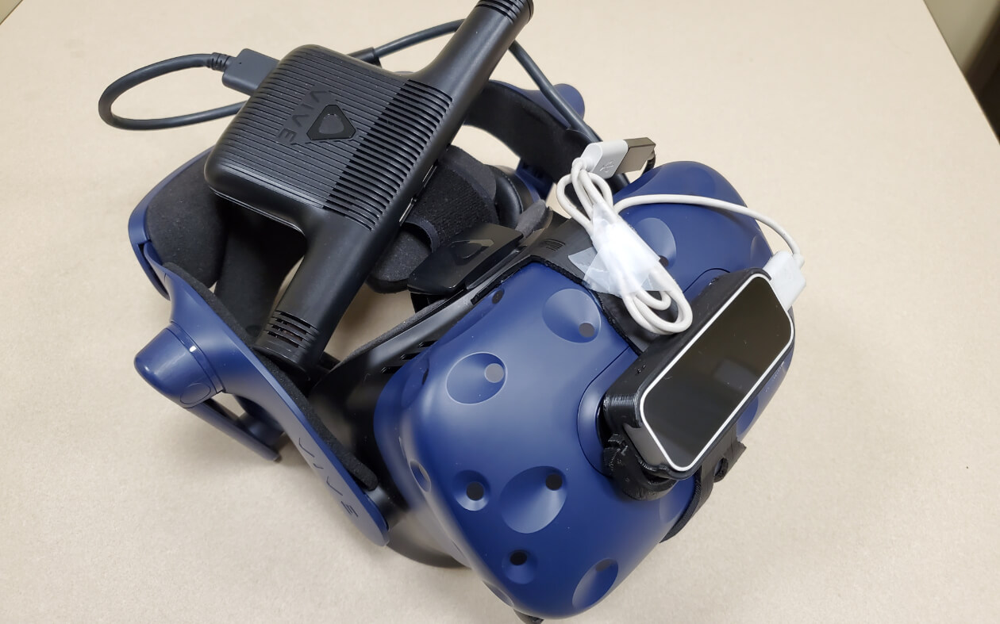
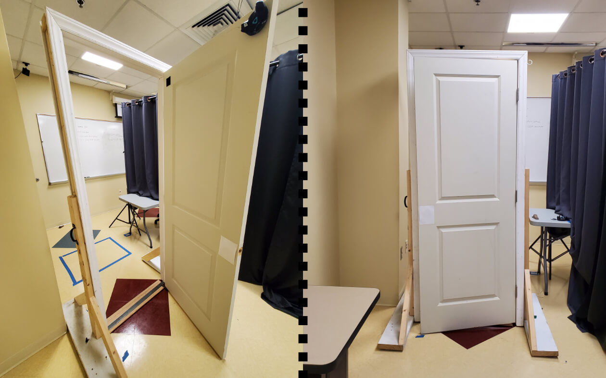
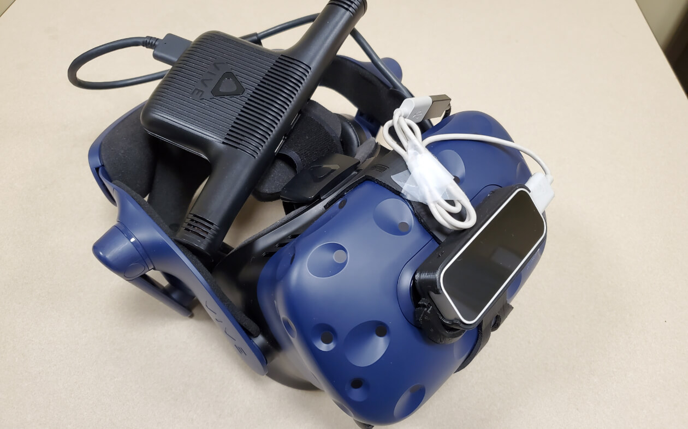
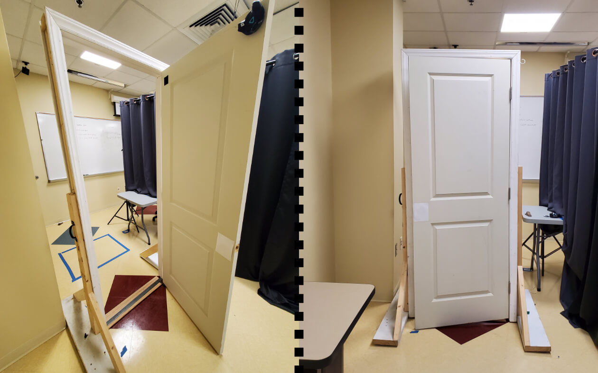

ABOUT A VR tour of the historic Magnolia House for the Meta Quest 2.
C#, Unity, Blender, SketchUp, Audacity
NEWS ARTICLE
VR NAVIGATION Taking into account first time VR users, a teleportation based navigation system is being used. Teleportable areas are displayed when the user wants to teleport.
ILLUMINATION Unity's lighting and reflection tools were used to create realistic lighting within the house. Natural lighting from outside and lights inside were simulated. Glass and mirrors utilize the reflection probe tool.
OPTIMIZED GRAPHICS The amount of lights and the complexity of the shaders caused the performance of the Meta Quest 2 to drop.
By utilizing frustum and occlusion culling, and reducing number of polygons of the 3D models, the performance was brought up significantly.


ABOUTResearch to discover why time is perceived differently in VR.
As the main researcher, I developed a VR project and conducted experiments.
C#, Unity, R, RStudio, GitLab, Blender, SteamVR, OpenXR
RESEARCH MAGAZINE IEEE VR PAPER
THE EXPERIMENTSimilar to how time is perceived as passing quicker when watching a show, time is also perceived differently in VR.
The experiment tested if the physicality of the VR experience had any effect on time perception by utilizing physical props.
DEMO VIDEO
PHYSICAL PROPSPhysical props are real objects that are tracked and displayed in VR. The movement and orientations of physical props are replicated by their counterparts in VR.
The user can touch and carry these objects, effectively increasing the physicality of the experience.
AUTOMATED DATA COLLECTIONTo collect data more efficiently during the testing phase, a system for Unity that collects and records data into a CSV file was developed.
AUTOMATION TOOL

 




ABOUTA game development workshop I organized and instructed during HackNC 2022 that utilized the Godot game engine.
Godot, GitHub, Affinity Designer
WORKSHOP VIDEO
THE WORKSHOPI prepared a presentation about game development and presented it during the workshop. I also developed the space game from start to finish during the workshop while the attendees followed along.
VISUAL SCRIPTINGI used a visual scripting language to easily explain programming to the attendees.
Godot's visual scripting language provided an enjoyable learning experience.
SPACE GAMEA game where the player must steer a speeding spaceship to avoid colliding with planets. The goal is to beat the highscore by staying alive, the survival timer is displayed on the screen.
GAME ON GITHUB


QUICK CHARACTERA Unity asset that makes the development of character movement mechanics quicker by providing a solid framework.
QUICK CHARACTER ON GITHUB
THIS WEBSITETo make this website, I learned HTML, CSS, and Javascript.
I host my website using GitHub Pages. The repository is public.
WEBSITE ON GITHUB
WORD MAKERA Python project created to procedurally generate words based on rules set by the user.
WORD MAKER ON GITHUB
YOUTUBE CHANNELYouTube Channel where I post game development videos and Unreal Engine tutorials.
YOUTUBE CHANNEL
VR HOUSE
ABOUT A VR tour of the historic Magnolia House I created for the Meta Quest 2.
I developed all aspects of the project from start to finish.
C#, Unity, Blender, SketchUp, Audacity
NEWS ARTICLE
VR NAVIGATION Navigation is a big problem in VR. Taking into account first time VR users, I opted for a teleportation based navigation system. I programmed a system that displays teleportable areas when the user wants to teleport.
ILLUMINATION To immerse the user in the experience, I used Unity's lighting and reflection tools to create realistic lighting within the house. I simulated natural lighting from outside and lights inside. Glass and mirrors utilize the reflection probe tool.
REALISTIC SHADERS I programmed shaders for each material in the house with the goal of making it look realistic. A simple noise texture I used with Unity's shader graph tool elevated the graphics, making them life-like.
OPTIMIZED GRAPHICS The amount of lights and the complexity of the shaders caused the performance of the Meta Quest 2 to drop.
By utilizing frustum and occlusion culling I managed to bring the performance up significantly. I also reduced the number of polygons of the model using Blender.
VR RESEARCH
ABOUTResearch to discover why time is perceived differently in VR.
As the main researcher, I developed a VR project and conducted experiments.
C#, Unity, R, RStudio, GitLab, Blender, SteamVR, OpenXR
RESEARCH MAGAZINE IEEE VR PAPER
THE EXPERIMENTSimilar to how time is perceived as passing quicker when watching a show, time is also perceived differently in VR.
The experiment tested if the physicality of the VR experience had any effect on time perception by utilizing physical props.
DEMO VIDEO
PHYSICAL PROPSPhysical props are real objects that are tracked and displayed in VR. The movement and orientations of physical props are replicated by their counterparts in VR.
The user can touch and carry these objects, effectively increasing the physicality of the experience.
AUTOMATED DATA COLLECTIONTo collect data more efficiently during the testing phase, a system for Unity that collects and records data into a CSV file was developed.
AUTOMATION TOOL
GODOT WORKSHOP
ABOUTA game development workshop I organized and instructed during HackNC 2022 that utilized the Godot game engine.
Godot, GitHub, Affinity Designer
WORKSHOP VIDEO
THE WORKSHOPI prepared a presentation about game development and presented it during the workshop. I also developed the space game from start to finish during the workshop while the attendees followed along.
VISUAL SCRIPTINGI used a visual scripting language to easily explain programming to the attendees.
Godot's visual scripting language provided an enjoyable learning experience.
SPACE GAMEA game where the player must steer a speeding spaceship to avoid colliding with planets. The goal is to beat the highscore by staying alive, the survival timer is displayed on the screen.
GAME ON GITHUB
OTHER
QUICK CHARACTERA Unity asset that makes the development of character movement mechanics quicker by providing a solid framework.
QUICK CHARACTER ON GITHUB
THIS WEBSITETo make this website, I learned HTML, CSS, and Javascript.
I host my website using GitHub Pages. The repository is public.
WEBSITE ON GITHUB
WORD MAKERA Python project created to procedurally generate words based on rules set by the user.
WORD MAKER ON GITHUB
YOUTUBE CHANNELYouTube Channel where I post game development videos and Unreal Engine tutorials.
YOUTUBE CHANNEL